건축산업기사 (2007-05-13 기출문제)
1과목: 건축계획
1. 일반주택계획에 관한 설명 중 옳지 않은 것은?
- 실내의 계단은 현관이나 거실에 가까이 근접하여 위치시키는 것이 좋다.
- 통풍을 고려하여 북측에도 창문을 낼 필요가 있다.
- 현관의 위치는 대지의 형태, 도로와의 관계 등에 의하여 결정된다.
- 부엌은 음식물이 상하기 쉬우므로 남향을 피하고 주택의 서측에 배치하는 것이 가장 좋다.
(정답률: 37%)

2. 소규모 주택에서 거실의 일단에 식탁을 꾸며 놓은 것은?
- 다이닝 포치(Dining Porch)
- 다이닝 키친(Dining Kitchen)
- 다이닝 알코브(Dining Alcove)
- 다이닝 테라스(Dining Terrace)
(정답률: 44%)
3. 주택의 동선계획에 관한 설명 중 옳지 않은 것은?
- 가사노동의 동선은 되도록 북쪽에 오도록 하고, 길게 한다.
- 개인, 사회, 가사노동권의 3개 동선이 서로 분리되어 간섭이 없도록 한다.
- 주택 내부동선은 외부조건과 배실설계에 따른 출입 형태에 의해 1차적으로 결정된다.
- 동선에는 공간이 필요하고 가구를 둘 수 없다.
(정답률: 59%)
4. 다음의 공장의 지붕형태에 대한 설명 중 옳지 않은 것은?
- 평지붕은 대개 중층식 건물의 최상층에 쓰인다.
- 톱날지붕은 기둥이 적게 소요되기 때문에 기계배치의 융통성이 좋다.
- 뾰족지붕은 직사광선을 어느 정도 허용하는 결점이 있다.
- 솟음지붕은 채광, 환기에 적합하다.
(정답률: 55%)
5. 사무소 건축의 코어(Core)내 각 공간의 위치 관계에 대한 설명으로 옳지 않은 것은?
- 계단, 엘리베이터, 화장실은 가능한 한 근접시킨다.
- 엘리베이터는 가급적 중앙에 집중시킨다.
- 코어(Core)내에 각 공간이 각 층마다 공통의 위치에 있게 한다.
- 코어내의 공간과 임대 사무실 사이의 동선은 외래자에게 잘 알려지지 않도록 복잡하게 한다.
(정답률: 75%)
6. 사무소건축에서 유효율(rentable ratio)이란 무엇인가?
- 업무공간과 공용공간의 비
- 임대면적과 연면적의 비
- 연면적과 대지면적의 비
- 기준층의 바닥면적과 연면적의 비
(정답률: 73%)
7. 상점에 있어서 진열창(show-window)의 반사를 방지하기 위한 조치로 가장 적합하지 않은 것은?
- 진열창내의 밝기를 외부보다 낮게 한다.
- 차양을 달아 진열창 외부에 그늘을 준다.
- 진열창의 유리면을 경사지게 한다.
- 곡면 유리를 사용한다.
(정답률: 94%)
8. 학교의 음악교실계획에 대한 설명 중 옳지 않은 것은?
- 실은 밝게 하는 것이 음악적으로 좋은 분위기가 될 수 있다.
- 옥내운동장이나 공작실과 가까이 배치하여 유기적인 연결을 꾀한다.
- 강당과 연락이 쉬운 위치가 좋다.
- 적당한 잔향시간을 가질 수 있도록 한다.
(정답률: 58%)
9. 초등학교에 대한 기술 중 적합하지 않은 것은?
- 동일 학년의 학급은 가급적 동일층에 배치할 수 있도록 계획한다.
- 저학년의 학급일수록 지면에 가깝게 배치할 수 있도록 계획한다.
- 저학년에서는 플라툰형(P형)의 방식으로 운영할 수 있도록 계획하는 것이 가장 바람직하다.
- 초급학년의 경우 학급 상호의 관계를 될 수 있는 대로 고립시켜 놓는다.
(정답률: 67%)
10. 학교의 교사배치형식 중 폐쇄형에 관한 설명으로 옳지 않은 것은?
- 일종의 핑거 플랜으로 구조계획이 간단하고 규격형의 이용도 편리하다
- 별도의 피난통로를 만들지 않으면 화재 및 비상시에 불리하다.
- 교사 주변에 활용되지 않은 부분이 많은 결점이 있다.
- 일조, 통풍 등의 환경적 조건이 불리하다.
(정답률: 54%)
11. 공장의 창고건축에 대한 설명 중 가장 옳지 않은 것은?
- 단층창고의 출입문은 보통 크게 내는 것이 좋으며, 통상적으로 기둥 사이의 전체길이를 문으로 한다.
- 다층창고에서 화물의 출입은 기계설비를 이용한다.
- 단층창고의 경우 구조, 재료가 허용하는 한 스팬을 넓게 하는 것이 좋다.
- 다층창고는 지가가 높고, 협소한 부지의 경우에는 적용할 수 없다.
(정답률: 65%)
12. 사무소건축의 평면형태 중 2중지역 배치에 대한 설명으로 옳지 않은 것은?
- 자연채광이 잘 되고 경제성보다 건강, 분위기 등의 필요가 더 요구될 때 가장 적당하다.
- 중규모 크기의 사무소 건축에 적당하다.
- 동서로 노출되도록 방향성을 정한다.
- 주계단과 부계단에서 각 실로 들어갈 수 있다.
(정답률: 32%)
13. 상점 건축의 동선 계획에 대한 설명 중 틀린 것은?
- 종업원 동선은 가능한 한 짧게 하여 소수의 종업원으로도 판매가 능률적이 되도록 한다.
- 고객의 동선과 종업원 동선은 교차되지 않는 것이 바람직하다.
- 동선에 변화를 주기 위해 바닥 면에 고저차를 두는 것이 좋다.
- 고객 동선은 가능한 길게 하여 다수의 손님을 수용하도록 한다.
(정답률: 70%)
14. 다음의 상점의ㆍ방위에 관한 설명 중 옳지 않은 것은?
- 음식점은 도로의 남측이 좋다.
- 식료품점은 석양에 의한 상품변질을 피하도록 한다.
- 서점은 가급적 도로의 남측이나 서측을 선택하되, 일사에 의한 퇴색, 변형, 방지에 유의한다.
- 여름용품점은 도로의 남측을 택하여 북측광선을 받도록 한다.
(정답률: 42%)
15. 공장의 레이아웃(layout) 계획에 대한 설명 중 부적당한 것은?
- 공장건축에 있어서 이용자의 심리적인 요구를 고려하여 내부환경을 결정하는 것을 의미한다.
- 작업장내의 기계설비, 작업자의 작업구역, 자재나 제품 두는 곳 등에 대한 상호관계의 검토가 필요하다.
- 고정식 레이아웃은 조선소와 같이 제품이 크고 수량이 적은 경우에 행해진다.
- 레이아웃은 공장규모의 변화에 대응할 수 있도록 충분한 융통성을 부여하여야 한다.
(정답률: 77%)
16. 공동주택의 공동시설 계획에 대한 설명 중 옳지 않은 것은?
- 이용빈도가 높은 건물은 이용거리를 짧게 한다.
- 확장 또는 증설을 위한 용지를 확보한다.
- 중심을 형성할 수 있는 곳에 설치한다.
- 간선도로 변에 위치시킨다.
(정답률: 43%)
17. 공동주택에서 하나의 주거단위가 복층형식을 취하는 메조넷형에 대한 설명으로 옳지 않은 것은?
- 엘리베이터의 정지 층수가 적어 경제적이고 효율적이다.
- 복도가 없는 층이 있어 평면계획이 유동적이다.
- 통로면적은 물론 유효면적도 감소한다.
- 거주성, 특히 프라이버시가 높다.
(정답률: 알수없음)
18. 다음 중 주택 침실에 관한 설명으로 옳지 않은 것은?
- 침실은 독립성(privacy)이 보장되어야 한다.
- 출입문은 침대가 직접 보이지 않도록 안여닫이로 한다.
- 침실은 도로에 면한 위치가 좋다.
- 침실의 침대는 머리쪽에 창을 두지 않는 것이 좋다.
(정답률: 59%)
19. 슈퍼마켓(Super-market) 건축계획에 관한 기술 중 가장 올바른 것은?
- 매장바닥은 단차를 두면 단조로운 대공간에 변화감을 주어 효과적이다.
- 입구와 출구의 폭은 같게 하고 가급적 분리시키는 것이 좋다.
- 체크 카운터의 대수는 1시간당 1대의 처리능력을 슈퍼마켓의 경우 100 ~ 200명으로 보고 결정한다.
- 고객동선은 일방통행이 좋고 통로폭은 1.5m 이상이 바람직하다.
(정답률: 알수없음)
20. 다음의 공동주택에 관한 설명 중 옳지 않은 것은?
- 의도적으로 주택을 집합화함으로써 토지이용의 효율을 높인 주거군을 말한다.
- 생활에 필요한 상수와 하수의 통합이 필요해 진다.
- 주택의 집적으로 주거밀도가 높아짐에 따라 억제기능이 필요하다.
- 상업적ㆍ문화적 공동시설을 만들어 주거환경의 질을 높일 수 있다.
(정답률: 알수없음)
2과목: 건축시공
21. 네트워크(Net work) 공정표와 관계가 없는 것은?
- 슬랙(slack)
- 이벤트(event) 또는 노드(node)
- 더미(dummy)
- 커넥터(connector)
(정답률: 0%)
22. 지반개량 공법이 아닌 것은?
- 치환공법
- 다짐공법
- 가동매입공법
- 탈수공법
(정답률: 34%)
23. 지하연속벽과 같이 좁고 깊은 곳까지 굴착을 필요로 할때 가장 적합한 굴착장비는?
- 파워쇼벨(power shovel)
- 드래그쇼벨(drag shovel)
- 크램쉘(clam shell)
- 스크레이퍼(scraper)
(정답률: 69%)
24. 어스앵커식 흙막이 공법에 관한 기술로 옳은 것은?
- 굴착단면을 토질의 안정구배에 따른 사면으로 실시하는 공법
- 굴착외주에 흙막이 벽을 설치하고 토압을 흙막이벽의 버팀대에 부담하고 굴착하는 공법
- 흙막이벽의 배면 흙속에 고강도 강재를 사용하여 보링 공내에 모르타르재와 함께 시공하는 공법
- 통나무를 1.5~2m 간격으로 박고 그 사이에 널을 대고 흙막이를 하는 공법
(정답률: 37%)
25. 다음 중 철근 공사에서 철근의 정착위치로 맞는 것은?
- 기둥의 주근은 보에 정착
- 보의 주근은 바닥판에 정착
- 지중보의 주근은 기초 또는 기둥에 정착
- 바닥 철근은 기둥에 정착
(정답률: 알수없음)
26. 창문의 유리를 고정시키는 재료가 아닌 것은?
- 나무퍼티
- 가스켓
- 리싱
- 반죽퍼티
(정답률: 알수없음)
27. 타일공사에 대한 설명 중 틀린 것은?
- 타일을 붙이는 모르타르에 시멘트 가루를 뿌려 접착력을 향상시킨다.
- 모르타르 바탕의 바름두께가 10mm 이상일 경우에는 1회에 10mm 이하로 하여 나무흙손으로 눌러 바른다.
- 치장줄눈의 폭이 5mm 이상일 때는 고무흙손으로 충분히 눌러 빈틈이 생기지 않게 시공한다.
- 벽체타일이 시공되는 경우 바닥타일은 벽체타일을 먼저 붙인 후 시공한다.
(정답률: 알수없음)
28. 기둥, 벽 등의 모서리에 대어 미장바름을 보호하는 철물은?
- 논 슬립(Non slip)
- 리브 라스(Lip lath)
- 메탈 라스(Metal lath)
- 코너 비드(Corner bead)
(정답률: 82%)
29. 알루미늄에 관한 설명 중 옳지 않은 것은?
- 알루미늄은 독특한 흰 광택을 지닌 경금소으로서 광선 및 열의 반사율이 크다.
- 알루미늄은 용접이 될 수 있다.
- 알루미늄은 내식성이 크므로 직접 콘크리트 중에 매입해도 지장이 없다.
- 알루미늄판과 강판을 접속하여 사용하면 알루미늄판이 부식한다.
(정답률: 57%)
30. 벽두께 1.0B, 벽면적 30m2쌓기에 소요되는 벽돌의 정미량은?
- 3,900매
- 4,095매
- 4,470매
- 4,604매
(정답률: 18%)
31. 다음 미장 재료 중 수경성 미장재료는?
- 회반죽
- 회사벽
- 돌로마이트 플라스터
- 석고 플라스터
(정답률: 36%)
32. 토량 470m3를 불도져로 작업하려고 한다. 작업을 완료할 수 있는 산출 시간은? (단, 불도져의 삽날용량은 1.2m3, 토량환산계수는 0.8, 작업효율은 0.8, 1회 싸이클 시간은 12분이다.)
- 120.40시간
- 122.40시간
- 132.40시간
- 121.40시간
(정답률: 46%)
33. 거푸집 측입에 영향을 주는 요인에 관한 설명 중 틀린것은?
- 콘크리트 타설 속도가 빠를수록 측압이 크다.
- 묽은 콘크리트 일수록 측압이 크다.
- 철근량이 많을수록 측압이 크다.
- 단면이 클수록 측압이 크다.
(정답률: 46%)
34. 블록 공사에서 다음 중 틀린 것은?
- 벽의 모서리, 중간요소 기타 기준이 되는 부분을 먼저 정확하게 쌓는다.
- 단순조적 블록쌓기의 세로줄눈은 통줄눈으로 한다.
- 살두께가 큰 편을 위로 하여 쌓는다.
- 줄눈 두께는 10mm가 되게 한다.
(정답률: 30%)
35. 철골구조의 내화피복 공법과 가장 거리가 먼 것은?
- 성형판 붙임 공법
- 미장 공법
- 뿜칠 공법
- 심초 공법
(정답률: 37%)
36. 다음 중 일반적인 거푸집 조립 순서로 맞는 것은?
- 기둥 → 벽 → 보 → 슬래브
- 슬래브 → 기둥 → 벽 → 보
- 벽 → 기둥 → 슬래브 → 보
- 벽 → 기둥 → 슬래브 → 보
(정답률: 47%)
37. 다음 ( )에 들어갈 수치로 알맞게 짝지어진 것은?
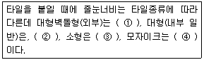
- ① 9mm ② 5~6mm ③ 3mm ④ 2mm
- ① 15mm ② 10~12mm ③ 6mm ④ 3mm
- ① 12mm ② 5~9mm ③ 6mm ④ 3mm
- ① 6mm ② 4mm ③ 3mm ④ 2mm
(정답률: 24%)
38. 다음 중 PERT/CPM에 대한 설명으로 적당하지 않은 것은?
- PERT는 명확하지 않은 사항이 많은 조건하에서 수행되는 신규사업에 많이 이용된다.
- CPM은 작업시간이 확립되지 않은 사업에 통상 활용된다.
- PERT는 공기단축을 목적으로 한다.
- CPM은 공비절감을 목적으로 한다.
(정답률: 34%)
39. 바닥에 콘크리트를 타설하기 위한 거푸집으로서 거푸집판, 장선, 멍에, 서포트 등을 일체로 제작하여 부재화한 거푸집을 무엇이라 하는가?
- 클라이밍 폼
- 슬립 폼
- 플라잉 폼
- 갱 폼
(정답률: 34%)
40. 다음 흙막이 공법중 흙막이 자체가 지하 본구조물의 옹벽을 형성하는 것은?
- H-Pile 및 토류판
- 소일네일링공법(soil nailing)
- 시멘트 주열벽(soil cement wall)
- 지하연속벽(slurry wall)
(정답률: 50%)
3과목: 건축구조
41. 다음 중 연약한 지에서 부동침하를 방지하기 위한 대책과 가장 관계가 먼 것은?
- 건물을 경량화시킨다.
- 건물의 중량분배에 유의한다.
- 지하실을 강성체로 설치한다.
- 건물의 길이를 길게 하고 인접 건물과의 거리를 가깝게 한다.
(정답률: 60%)
42. 그림과 같이 span이 10m인 단순보에 등분포하중이 작용할 때 최대 휨응력은? (단, 보의 자중은 무시하고 보의 단면은 폭 30cm, 높이 40cm이다.)
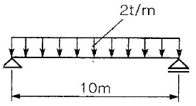
- 302.5 kg/cm2
- 312.5 kg/cm2
- 322.5 kg/cm2
- 332.5 kg/cm2
(정답률: 67%)
43. 그림과 같은 구조물의 부정정 차수는?
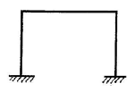
- 2차
- 3차
- 4차
- 5차
(정답률: 알수없음)
44. 그림과 같은 구조물에서 A점의 휨모멘트 값은?
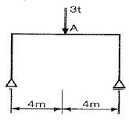
- 3 tㆍm
- 4 tㆍm
- 5 tㆍm
- 6 tㆍm
(정답률: 24%)
45. 그림과 같은 도형에서 도심을 지나는 X축에 대한 단면계수는?
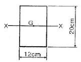
- 240 cm3
- 400 cm3
- 480 cm3
- 800 cm3
(정답률: 17%)
46. 강도설계법에서 복근보에 대한 설명 중 틀린것은?
- 복근보로 설계하면 장기처짐이 감소한다.
- 전단보강근의 배근이 용이하다.
- 압축철근이 인장철근의 50% 이상 배근되어야만 복근 보라 한다.
- 인장철근비를 최대철근비 이하로 유지하면서 설계강도를 높일 수 있다.
(정답률: 알수없음)
47. 강도설계법 적용시 다음 단면의 공칭강도 Mn로 가장 적당한 것은?(단, 콘크리트의fck=30MPa,철근의 fy=300MPa이고, 인장철근의 총단면적 As=1200mm2 이다.)
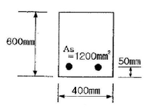
- 132.2 knㆍm
- 160.5 knㆍm
- 191.6 knㆍm
- 22.2 knㆍm
(정답률: 25%)
48. 철근콘크리트 기둥에서 띠처른의 구조적 역할에 관한 설명중 가장 부적절한 것은?
- 수평력에 대한 전단보강의 작용을 한다.
- 건조수축에 의한 변형을 제한한다.
- 주철근을 정해진 위치에 고정시킨다.
- 주철근의 좌굴을 억제한다.
(정답률: 알수없음)
49. 기본정착길이(ldb)의 계산 값이 730mm이고 고려해야 할보정계수가 1.4 와 1.18인 부재에서의 철근의 소요 정작 길이 (ld)는?
- 1022mm
- 1164mm
- 1206mm
- 1442mm
(정답률: 42%)
50. 강도설계법에 의한 철근콘크리트 단근보 설계에서 보의 균형철근비(ρb)가 0.02 일 때, 이 보의 최대철근비(ρmax)는?
- 0.010
- 0.015
- 0.020
- 0.025
(정답률: 25%)
51. 단근직사각형보에서 인장철근비 값으로 옳은 것은?(단, b=300mm, d=500mm, fck=21MPa, fy=400MPa, 2-D22, D22의 단면적은 387mm2)
- 0.0032
- 0.0⑤2
- 0.0124
- 0.0171
(정답률: 29%)
52. 다음과 같은 조건의 대칭 T형보의 유효폭은?
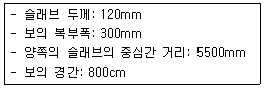
- 2000mm
- 2220 mm
- 5500mm
- 5800mm
(정답률: 알수없음)
53. 그림과 같은 구조물에서 A점의 반력 RA의 크기는?
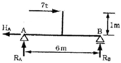
- 0 t
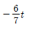
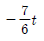
- -3 t
(정답률: 10%)
54. 다음과 같은 단순보에서 전단력이 0 이 되는 위치는 B점으로부터 좌측으로 얼마의 거리에 있는가?
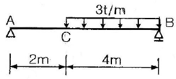
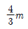
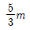
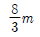
- 4m
(정답률: 17%)
55. 다음 중 철근콘크리트 강도설계법에 관한 설명으로 옳지 않은 것은?
- 서로 다른 하중의 특성을 하중계수에 의하여 설계에 반영할 수 있다.
- 부재단면의 극한강도는 재료의 비선형 성질을 고려한다.
- 사용성의 확보(균열, 처짐)를 위한 별도의 검토가 필요 없다.
- 서로 다른 재료의 특성을 설계에 합리적으로 반영하기 어렵다.
(정답률: 63%)
56. 그림과 같은 힘 P가 작용하는 라멘에서 휨모멘트가 0이 되는 곳은 몇 개인가?
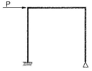
- 2
- 3
- 4
- 5
(정답률: 20%)
57. 그림과 같은 단면을 가지는 직사각형보의 철근비는? (단, 철근 3-D16=597mm2, d=400mm)
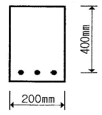
- 0.0065
- 0.0070
- 0.0075
- 0.0080
(정답률: 알수없음)
58. 철근콘크리트구조에서 철근 가공시 표준갈고리에 대한 설명으로 옳지 않는 것은?
- 일반 철근의 표준갈고리는 90° 표준갈고리와 180° 표준갈고리가 있다.
- 띠철근과 스터럽의 표준갈고리는 90° 표준갈고리와 135° 표준갈고리가 있다.
- 일반 철근의 90° 표준갈고리는 90° 구부린 끝에서 10db이상 더 연장하여야 한다.
- D25 이하의 철근으로 135° 표준갈고리를 만드는 경우, 135° 구부린 끝에서 6db이상 더 연장하여야 한다.
(정답률: 29%)
59. 길이가 1m, 단면적이 5cm2, 탄성계수가 1.0×105kg/cm2인 강봉에 5t 의 하중이 작용할 경우 부재의 늘어난 길이(△l)는 얼마인가?
- 0.5cm
- 1.0cm
- 2.0cm
- 2.5cm
(정답률: 20%)
60. 다음 중 기초의 지정 형식에 따른 분류에 속하지 않는 것은?
- 직접 기초
- 온통 기초
- 말뚝 기초
- 피어 기초
(정답률: 알수없음)
4과목: 건축설비
61. 옥내 배선의 전기 회로를 조작하거나 보수하기 편리하도록 시설하는 스위치에 해당하는 배선 기구는?
- 자동 차단기
- 개폐기
- 접속기
- 콘센트
(정답률: 73%)
62. 다음과 같은 급수설비에서 필요한 양수 펌프의 축동력은? (단, 펌프의 양수량 2400ℓ/min, 펌프의 효율 70%, 펌프의 전양정 9m)
- 4.53[kw]
- 5.04[kw]
- 6.35[kw]
- 7.14[kw]
(정답률: 34%)
63. 건축설비분야에서 급수, 급탕, 배수 등에 주로 사용되는 터보형 펌프는?
- 사류 펌프
- 원심식 펌프
- 왕복식 펌프
- 마찰 펌프
(정답률: 50%)
64. 다음의 급수 바익 중 위생성 측면에서 가장 바람직한 방식은?
- 수도직결 방식
- 고가탱크 방식
- 압력탱크 방식
- 탱크가 없는 부스터 방식
(정답률: 50%)
65. 어떤 방의 전열에 의한 손실열량이 3000[kcal/h], 환기에 의한 손실열량이 1500[kcal/h] 일 때, 이 방에 설치 되어야할 온수 방열기의 상당방열면적은? (단, 모든 상태는 표준상태로 가정한다.)
- 10 [m2]
- 9 [m2]
- 8 [m2]
- 7 [m2]
(정답률: 17%)
66. 양수량이 1[m3/min]인 펌프에서 회전수를 원래보다 10[%] 증가시켰을 경우 양수량은?
- 1.0 [m3/min]
- 1.1 [m3/min]
- 1.2 [m3/min]
- 1.3 [m3/min]
(정답률: 70%)
67. 외부로부터의 화재에 의하여 탈 염려가 있는 건물의 외벽이나 지붕을 수막으로 덮어 연소를 방지하는 설비는?
- 옥외소화전 설비
- 드렌처 설비
- 옥내소화전 설비
- 포소화 설비
(정답률: 90%)
68. 다음 중 난방설비에서 벨로우즈 트랩(bellows trap)이 사용되는 가장 주된 이유는?
- 관내의 공기를 배출시키기 위하여
- 관내의 압력을 조절하기 위하여
- 관내의 고형이물을 제거하기 위하여
- 관내에 발생하는 응축수를 배출하기 위하여
(정답률: 34%)
69. 다음 중 보일러의 능력을 나타내는데 사용되는 정격출력을 가장 알맞게 나타낸 것은?
- 난방부하 + 배관손실
- 난방부하 + 급탕부하
- 난방부하 + 급탕부하 + 배관손실
- 난방부하 + 급탕부하 + 배관손실 + 예열부하
(정답률: 알수없음)
70. 온수난방설비에 사용되는 팽창탱크의 기능에 관한 설명으로 가장 알맞은 것은?
- 배관중의 높은 곳이나 굴곡부에 체류하는 공기를 제거한다.
- 기포가 온수의 흐름과 같은 방향으로 흐르도록 한다.
- 공급관과 환수관의 마찰저항값을 유사하게 하여 순환온수가 균등하게 흐르도록 한다.
- 운전 중 장치내의 온도상승으로 생기는 물의 체적팽창과 그 압력을 흡수한다.
(정답률: 32%)
71. 간선의 배선 방식 중 평행식에 대한 설명으로 옳은 것은?
- 용량이 큰 부하에 대하여는 단독의 간선으로 배선할 수 없다.
- 배전반으로부터 각 층의 분전반까지 단독으로 배선되므로 전압 강하가 평균화된다.
- 나뭇가지식에 비해 사고발생시 파급되는 범위가 넓다.
- 나뭇가지식에 비해 배선이 단순하며 설비비가 저렴
(정답률: 43%)
72. 분전반은 분기회로의 길이가 최대 얼마 이하가 되도록 설치하는 것이 가장 바람직한가?
- 40m
- 30m
- 20m
- 10m
(정답률: 25%)
73. 다음 중 조명 설계시 가장 먼저 이루어져야 하는 것은?
- 광원의 선정
- 조명 기구의 선정
- 기구 대수의 산출
- 소요 조도의 결정
(정답률: 알수없음)
74. 펌프의 종류를 크게 분류하였을 때, 작동 부분이 회전운동을 하는 펌프에 속하지 않는 것은?
- 원심 펌프
- 사류 펌프
- 기어 펌프
- 피스톤 펌프
(정답률: 42%)
75. 다음 중 난방부하 계산시 고려되지 않는 것은?
- 상당외기온도
- 실내온도
- 열관류율
- 환기량
(정답률: 20%)
76. 피뢰설비에서 돌침은 건축물의 맨 윗부분으로부터 최소얼마 이상 돌출시켜 설치하여야 하는가?
- 25cm
- 27cm
- 30cm
- 32cm
(정답률: 알수없음)
77. 수질 관련 용어 중 BOD란 무엇인가?
- 생물화학적 산소요구량
- 화학적 산소요구량
- 용존산소량
- 수소이온농도
(정답률: 알수없음)
78. 동일한 풍량을 송풍할 경우 덕트의 마찰손실이 가장 적은 단면의 형태는?
- 직사각형
- 정사각형
- 삼각형
- 원형
(정답률: 44%)
79. 대변기의 세정방식 중 바닥으로부터 1.6M 이상 높은 위치에 탱크를 설치하고, 볼 탭을 통하여 공급된 일정량의 물을 저장하고 있다가 핸들 또는 레버의 조작에 의해 낙차에 의한 수압으로 대변기를 세척하는 방식은?
- 하이 탱크식
- 로 탱크식
- 플러시 밸브식
- 사이폰 제트식
(정답률: 59%)
80. 비상 콘센트를 설치할 경우, 바닥으로부터 설치 높이는?
- 0.5m 이상 1.0m 이하
- 1.0m 이상 1.5m 이하
- 1.5m 이상 2.0m 이하
- 2.0m 이상 2.5m 이하
(정답률: 16%)
5과목: 건축관계법규
81. 주요구조부가 내화구조 또는 불연재료로 된 16층의 아파트의 경우 거실의 각 부분으로부터 직통계단까지의 최대 보행 거리는?
- 30미터
- 40미터
- 50미터
- 60미터
(정답률: 알수없음)
82. 건축물의 대지가 2가지 이상의 지역ㆍ지구에 걸치는 경우 건축물 및 대지 전부에 대해서 면적 배분에 관계 없이 그 지역ㆍ지구의 규정을 적용받는 지역 또는 지구는?
- 상업지역
- 녹지지역
- 풍치지구
- 미관지구
(정답률: 20%)
83. 제 1종 근린생활시설에 속하는 기준 내용 중 ( )안에 들어갈 말로 알맞은 것은?
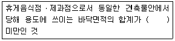
- 100제곱미터
- 200제곱미터
- 300제곱미터
- 400제곱미터
(정답률: 22%)
84. 주차장법상 주차전용건축물의 건폐율ㆍ용적률ㆍ대지면적의 최소한도 및 높이제한에 대한 기준으로 옳지 않은 것은?
- 건폐율 : 100분의 80 이하
- 용적률 : 1천500퍼센트 이하
- 대지면적의 최소한도 : 45제곱미터 이상
- 높이제한 : 대지가 너비 12미터미만의 도로에 접하는 경우 건축물의 각 부분의 높이는 그 부분으로부터 대지에 접한 도로의 반대쪽 경계선까지의 수평거리의 3배이하
(정답률: 17%)
85. 비상용승강기의 승강장 구조에 대한 설명으로 틀린 것은?
- 승강장의 창문ㆍ출입구 기타 개구부를 제외한 부분은 당해 거눅물의 다른 부분과 내화구조의 바닥 및 벽으로 구획할 것
- 벽 및 반자가 실내에 접하는 부분의 마가매료는 불연 재료로 할 것
- 승강장은 피난층을 제외한 각 층의 내부와 연결될 수 있도록 하되, 그 출입구에는 갑종 또는 을종방화 문을 설치할 것
- 피난층이 있는 승강장의 출입구로부터 도로 또는 공지에 이르는 거리가 30m 이하일 것.
(정답률: 알수없음)
86. 다음 중 시설면적이 120m3일 때 부설주차장을 설치하여야 하는 시설물은?
- 유흥주점
- 호텔
- 예식장
- 백화점
(정답률: 25%)
87. 기계식주차장의 사용검사 유효기간은 원칙적으로 몇 년 인가?
- 1년
- 2년
- 3년
- 4년
(정답률: 47%)
88. 건축법의 용도분류상 단독주택에 속하는 것은?
- 공관
- 다세대주택
- 연립주택
- 기숙사
(정답률: 34%)
89. 다음의 자주식 주차장으로서 지하식 또는 건축물식에 의한 노의주차장의 차로 기준 내용 중 ( )안에 들어갈 말로 알맞은 것은?
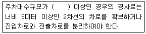
- 30대
- 50대
- 100대
- 300대
(정답률: 6%)
90. 건축주가 허가를 받았거나 신고를 한 사항을 변경하고자 하였을 때 허가ㆍ신고사항의 변경에 대한 기술 중 틀린 것은?
- 바닥면적의 합계가 85m2를 초과하는 부분에 대한 개축은 허가를 받는다.
- 건축주를 변경하는 경우에는 허가를 받는다.
- 건축물의 동수나 층수의 변경 없이 연면적 합계의 1/10 변경일 경우 사용승인시 일괄 신고한다.
- 건축물의 층수 변경없이 변경되는 높이가 1m이하인 경우 사용승인시 일괄 신고한다.
(정답률: 39%)
91. 기계식 주차장에는 도로에서 기계식 주차장치 출입구까지의 차로 또는 전명공지와 접하는 장소에 자동차가 대기할수 있는 장소, 즉 정류장을 설치하여야 하는데 그 규모로 적합한 것은?
- 중형 기계식 주차장 : 길이 5.⑤m 이상, 너비 1.85m 이상
- 대형 기계식 주차장 : 길이 5.55m 이상, 너비 2.⑤m 이상
- 중형 기계식 주차장 : 길이 5.35m 이상, 너비 1.85m 이상
- 대형 기계식 주차장 : 길이 5.75m 이상, 너비 2.15m 이상
(정답률: 20%)
92. 다음 중 다중이용건축물에 해당되지 않는 것은?
- 판매시설 - 바닥면적의 합계 5,000m2이상
- 문화 및 집회시설(전시장 및 동ㆍ식물원 제외) - 바닥 면적의 합계 5,000m2이상
- 의료시설 중 종합병원 - 바닥면적의 합계 5,000m2이상
- 숙박시설 중 일반숙박시설 - 바닥면적의 합계 5,000m2이상
(정답률: 알수없음)
93. 건축법상 사용승인신청을 받은 경우 허가권자는 신청서를 받은 날로부터 몇 일 이내에 사용승인을 위한 현장 검사를 실시하여야 하는가?
- 3일 이내
- 5일 이내
- 7일 이내
- 10일 이내
(정답률: 27%)
94. 원칙적으로 노상주차장 설치금지장소가 잘못된 것은?
- 주간선도로
- 너비 8m 미만의 도로
- 종단구배가 4%를 초과하는 도로
- 고가도로
(정답률: 알수없음)
95. 다중이용건축물의 공사감리와 관련이 없는 것은?
- 건축감리전문회사 또는 종합감리전문회사를 공사감리자로 지정하여야 한다. 다만, 건설기술관리법령의 규정에 의하여 감리원을 배치하는 경우에는 건축사를 공사감리자로 지정할 수 있다.
- 감리원을 배치할 때 건축사를 공사감리자로 지정할 수 있다.
- 감리대가는 건축주와 협의한다.
- 감리원의 배치 기준은 건설기술 관리법이 정하는 바에 의한다.
(정답률: 10%)
96. 공동주택과 오피스텔의 난방설비를 개별난방방식으로 하는 경우 보일러실의 윗부분에는 그 면적이 0.5m2이상인 환기창을 설치하고, 보일러실의 윗부분과 아랫부분에는 각각 지름 최소 얼마 이상의 공기흡입구 및 배기구를 항상 열려있는 상태로 바깥공기에 접하도록 설치하여야 하는가?
- 5cm
- 10cm
- 15cm
- 20cm
(정답률: 알수없음)
97. 아파트의 신축공사시 골조공사에 건축폐자재를 사용했을 경우 용적율의 최대 완화 범위는?
- 100분의 110
- 100분의 115
- 100분의 120
- 100분의 125
(정답률: 24%)
98. 다음 중 건축물의 용도변경시 에너지 절약계획서를 제출해야 되는 것은?
- 연면적의 합계가 5,000m2dls 중앙집중식 공기조화설비를 설치한 학교
- 바닥면적의 합계가 3,000m2인 연구소
- 바닥면적의 합계가 1,000m2인 기숙사
- 바닥면적의 합계가 2,000m2인 중앙집중식 난방설비를 한 도매시장
(정답률: 50%)
99. 비상용 승강기를 설치하여야 하는 건축물에서 높이 31m를 넘는 각 층의 바닥면적 중 최대바닥면적이 6,000m2일 때 비상용 승강기의 최소설치대수는?
- 2대
- 3대
- 4대
- 5대
(정답률: 알수없음)
100. 다음 중 건축물의 용도상 자동차관련시설에 해당하지않는 것은?
- 기계식 세차설비
- 정비학원
- 매매장
- 폐차장
(정답률: 12%)